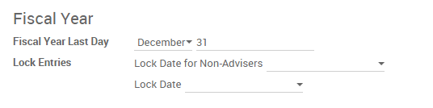

Before going ahead with closing a fiscal year, there are a few steps one should typically take to ensure that your accounting is correct, up to date, and accurate:
- Make sure you have fully reconciled your bank account(s) up to year end and confirm that your ending book balances agree with your bank statement balances.
- Verify that all customer invoices have been entered and approved.
- Confirm that you have entered and agreed all vendor bills.
- Validate all expenses, ensuring their accuracy.
- Corroborate that all received payments have been entered and recorded accurately.
Year-end checklist
- Run a Tax report, and verify that your tax information is correct.
Reconcile all accounts on your Balance Sheet:
- Agree your bank balances in Odoo against your actual bank balances on your statements. Utilize the Bank Reconciliation report to assist with this.
- Reconcile all transactions in your cash and bank accounts by running your Aged Receivables and Aged Payables reports.
- Audit your accounts, being sure to fully understand the transactions affecting them and the nature of the transactions, making sure to include loans and fixed assets.
- Run the optional Payments Matching feature, under the More dropdown on the dashboard, validating any open Vendor Bills and Customer Invoices with their payments. This step is optional, however it may assist the year-end process if all outstanding payments and invoices are reconciled, and could lead finding errors or mistakes in the system.
Your accountant/bookkeeper will likely verify your balance sheet items and book entries for:
- Year-end manual adjustments, using the Adviser Journal Entries menu (For example, the Current Year Earnings and Retained Earnings reports).
- Work in Progress.
- Depreciation Journal Entries.
- Loans.
- Tax adjustments.
If your accountant/bookkeeper is going through end of the year auditing, they may want to have paper copies of all balance sheet items (such as loans, bank accounts, prepayments, sales tax statements, etc...) to agree these against your Odoo balances.
During this process, it is good practice to set the Lock date for Non-Advisers to the last day of the preceding financial year, which is set under the accounting configuration. This way, the accountant can be confident that nobody is changing the previous year transactions while auditing the books.
Closing the fiscal year
In Odoo there is no need to do a specific year end closing entry in order to close out income statement accounts. The reports are created in real-time, meaning that the Income statement corresponds directly with the year-end date you specify in Odoo. Therefore, any time you generate the Income Statement, the beginning date will correspond with the beginning of the Fiscal Year and the account balances will all be 0.
Once the accountant/bookkeeper has created the journal entry to allocate the Current Year Earnings, you should set the Lock Date to the last day of the fiscal year. Making sure that before doing so, you confirm whether or not the current year earnings in the Balance Sheet is correctly reporting a 0 balance.